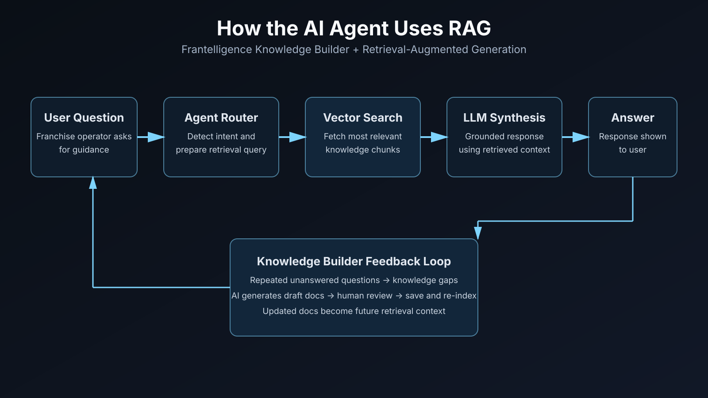
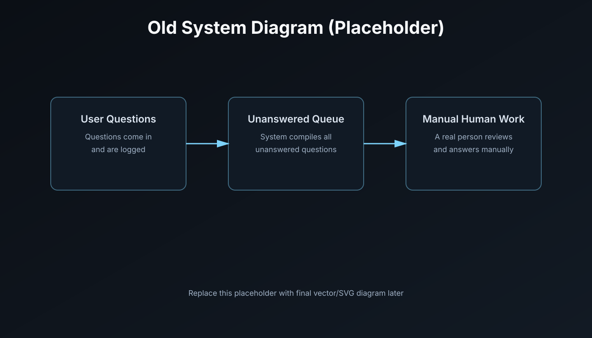
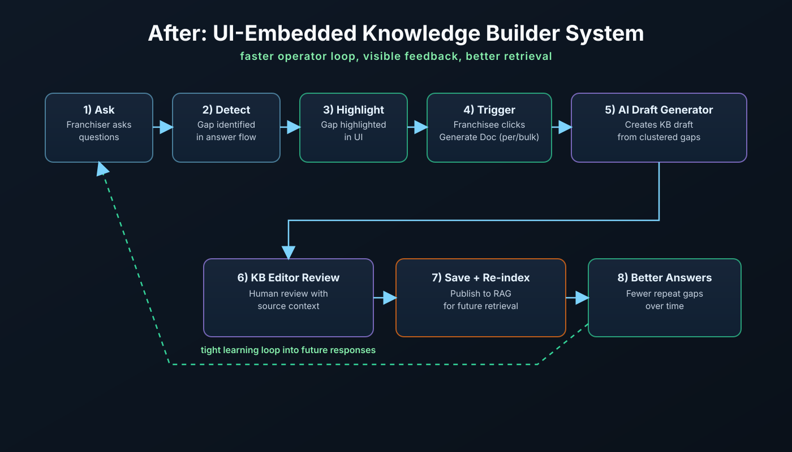

IS 590R · Winter 2026
Frantelligence Final Presentation
Knowledge Builder Agent · capstone deliverable
Journey
Changes since last we met
Product
From email → button
Interviews and falsification pushed us off a weekly-digest mental model.
Operators wanted to act where they already work.
Left: coordination and noise. Right: same signal, immediate in-app action.
System
AI Agent - RAG
retrieve → answer → learn from gaps → publish → better retrieval.

Architecture
System diagrams
Shift from a slow email handoff loop
to a UI-embedded feedback loop with faster action and re-indexing.
Earlier framing

Current framing

Problem
Problem statement evolution
Earlier framing
Solve Missing Documentation Problem
↓
Current framing
Detect answer gaps and reduce time from signal to publishable documentation
Validation
We falsify assumptions—in stages
Customers
Thoughts from our clients
Process
Document-driven development
Concrete scope stays in MVP; vision stays in the PRD. Plans age; we update them.
- PRD — product anchor the team can build from
- mvp.md — what “done” means for this course slice
- Roadmaps — phased checklists tied to shipped work
- Changelog — dated decisions (AI-assisted iteration, not one-shot)
- Ai Skills — repeatable skills to ensure consistency
Engineering
Logging & debugging
Structured logs on real paths, not only a logger module on the shelf.
- CLI / tests with clear exit codes for grading and automation
- Test → log → fix loop documented in history and artifacts
- Secrets stay out of the repo; behavior rules in CLAUDE.md / Cursor
Metrics
Success & failure criteria
Grounded in docs/success-failure-criteria.md — honest about what this pack can prove vs live product data.
Signals we want
- Draft → publish — reviewed, published, then used by clients
- Quicker time to close a gap — faster from signal to published doc
- Draft publish rate — more knowledge gaps are closed regularly
Pivots / Future Gates
- Email-primary — de-emphasized after falsification; in-app is primary
- Instrumentation — need clear metric owners and company-scoped analytics in pilots
Roadmap
Plans for the Future
Further Client Testing
Further Metrics Building
Official Deployment
Track Success
What we learned
The Journey so Far
Questions?